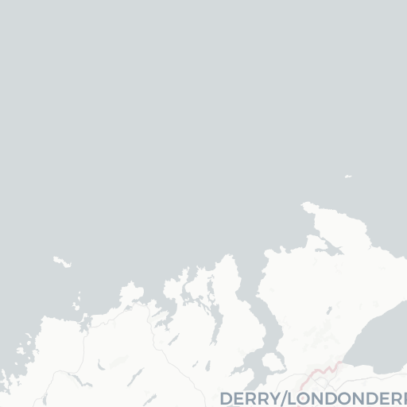
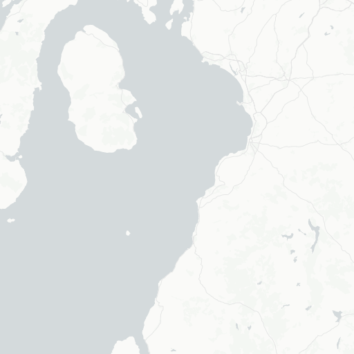
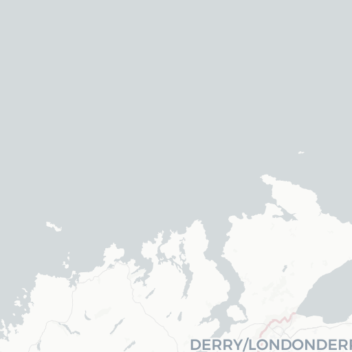
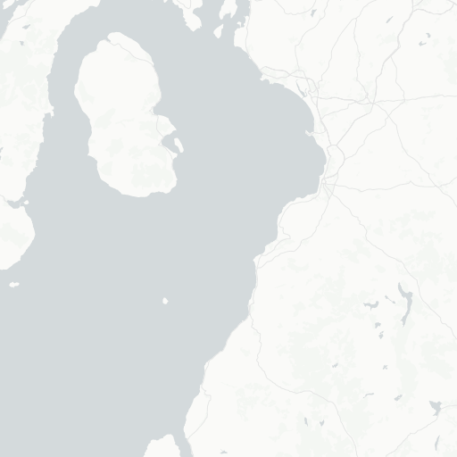

| 銘柄名 | 価格 | 産地 |
|---|---|---|
| キルホーマン2013-2021信濃屋 | ¥2,000 | Scotland, Islay |
| タリスカー44年オフィシャルボトル | ¥80,400 | Scotland (Isle of Skye) |
| ボウモア26年ダンカンテイラー | ¥15,000 | Scotland, Islay |
| ポートエレン25年 one of only bottles | ¥20,400 | Scotland, Islay |
| マッカラン1990年SAMAROLI | ¥12,200 | Scotland |
| 軽井沢25年 | ¥25,000 | Japan |
 
